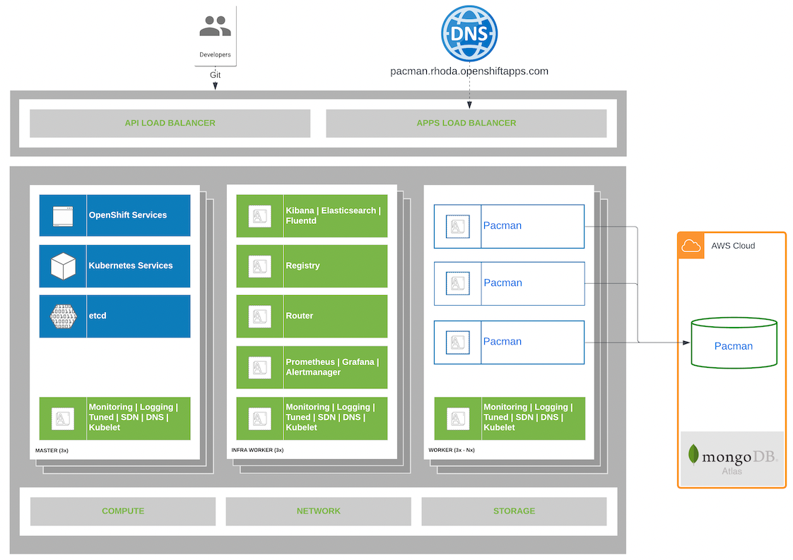

Pacman Architecture
This lab introduces you to the architecture of the Pacman application used throughout this workshop, to get a better understanding of the things you’ll be doing from a developer perspective. Pacman is an application built using the microservices architecture and is composed of a set of services which are developed using different programming languages and frameworks.

The main service is a web application which allows you to play the game from a browser. It is connected to the MongoAtlas Database.
The original source code for this application is located here.